Ferroelectricity and Ferromagnetism
Jingshan Qi
1,a)
, Hua Wang
, Xiaofang Chen
, and Xiaofeng Qian
2,a)
School of Physics and Electronic Engineering, Jiangsu Normal University, Xuzhou 221116,
P.R. China
Department of Materials Science and Engineering, Texas A&M University, College Station,
Texas 77843, USA
Abstract
Low-dimensional multiferroicity, though highly scarce in nature, has attracted great attention due
to both fundamental and technological interests. Using first-principles density functional theory,
we show that ferromagnetism and ferroelectricity can coexist in monolayer transition metal
phosphorus chalcogenides (TMPCs)
-
CuMP
X
(M=Cr, V; X=S, Se). These van der Waals
layered materials represent a class of 2D multiferroic semiconductors that simultaneously possess
ferroelectric and ferromagnetic orders. In these monolayer materials, Cu atoms spontaneously
move away from the center atomic plane, giving rise to nontrivial electric dipole moment along
the plane normal. In addition, their ferromagnetism originates from indirect exchange interaction
between Cr/V atoms, while their out-of-plane ferroelectricity suggests the possibility of controlling
electric polarization by external vertical electric field. Monolayer semiconducting
TMPCs
thus
provide a solid-state 2D materials platform for realizing 2D nanoscale switches and memory
devices patterned with top and bottom electrodes.
a)
Authors to whom correspondence should be addressed. Electronic addresses:
qijingshan@jsnu.edu.cn and feng@tamu.edu
Two-Dimensional Multiferroic Semiconductors with Coexisting
Multiferroics are a special class of materials that simultaneously possess two or more primary
ferroic orders among ferroelasticity, ferroelectricity (FE), ferromagnetism (FM), and
ferrotoroidicity. The last three requires breaking spatial-inversion symmetry, time-reversal
symmetry, and both, respectively. Among the four ferroic orders, FM and FE are crucial for
technological applications such as magnetic memory
and ferroelectric memory.
2, 3
Moreover, the
materials with coexisting FM and FE is called magnetoelectric multiferroics.
4, 5
Magnetism usually
comes from the ordered spins of electrons in the partially filled
d
/
f
orbitals of transition metals,
while FE often results from residual polarization due to stable off-centered ion with empty
d
/
f
orbitals in transition metal. It is, therefore, not surprising that many ferromagnets tend to be
metallic while such metallic nature will screen out electric polarization. The above mutually
exclusive requirements on the electronic occupation of the outer valence shells makes it
particularly challenging to host FE and FM within the same material. Consequently, only a limited
number of multiferroic materials have been discovered to date.
4, 5
Low-dimensional multiferroicity is even more attractive owing to their potential applications
in miniaturized devices. However, maintaining the stability of FE and FM at room temperature is
another nontrivial issue for ultrathin films. In particular, the depolarization field is usually
enhanced in thin films below a few nanometers (e.g. about 12 Å and 24 Å for conventional FE
materials BaTiO
or PbTiO
, respectively).
6, 7
This depolarization field will compete with intrinsic
ferroelectricity. Very recently several groups report the discoveries of two-dimensional (2D) FM,
8,
2D FE,
10-19
2D ferroelastic,
20, 21
2D ferroelastic-ferromagnetic
and 2D ferroelastic-ferroelectric
23,
materials. In addition, large second harmonic generation (SHG)
25, 26
and photostriction
were
also discovered in 2D ferroics. Remarkably, giant ferroelectricity and ferroelasticity in monolayer
group IV monochalcogenides were found to be strongly coupled with SHG,
making SHG a
unique tool for distinguishing different ferroelectric and ferroelastic orders. These findings suggest
a possibility of achieving 2D multiferroicity with coexisting FM and FE orders which are highly
desired for both fundamental science and technological applications.
Using first-principles theory, herein we predict that the monolayer transition metal
phosphorus chalcogenides TMPCs - CuMP
X
(M=Cr, V; X=S, Se) represent a class of 2D
multiferroic materials that simultaneously possess FE and FM orders. Their FE order comes from
the out-of-plane electric dipole moment due to energetically favorable spontaneous displacement
of Cu atoms away from the center atomic plane. It is worth to note that, although
antiferroelectricity (AFE) states are more stable energetically than FE and PE states for four
compounds, the transition energy barrier between FE and AFE is large enough to prevent
spontaneous transition from the FE to AFE state at room temperature in monolayer CuCrP
S
and
CuVP
S
. Their intermediate barrier indicates that FE states should be observed in experiment
under ambient conditions. Furthermore, the magnetism originates from Cr or V atoms. Our first-
principles calculations suggest that the FM state is more stable than the antiferromagnetic (AFM)
and non-magnetic (NM) states. The large
magnetocrystalline anisotropy energy (MAE) enables
the presence of long-range FM order in these 2D materials.
We would like to emphasize that the
intrinsic
out-of-plane
electric polarization in TMPCs is different from the
in-plane
polarization
recently found in monolayer group IV monochalcogenides
23, 24
and atomic-thick SnTe.
Finally,
all monolayer TMPCs are semiconducting crystals, which is beneficial to the coexistence of FE
and FM states.
Electronic structure calculations of monolayer TMPCs with different lattice constant were
carried out using first-principles density-functional theory (DFT)
28, 29
as implemented in the Vienna
Ab initio Simulation Package (VASP).
We use the exchange-correlation functional in the
Perdew-Burke-Ernzerhof (GGA) form
within the generalized gradient approximation and adopt
the projector-augmented wave method.
Additionally, we apply an energy cutoff of 400 eV for
the plane-wave basis and a 12
×
×
1 Monkhorst-Pack grid for k-point sampling.
A vacuum slab
of 20 Å is included to minimize the image interaction from periodic boundary condition. Atomic
coordinates were optimized with maximum residual force of 0.01 eV/Å. To properly take into
account the interlayer van der Waals interaction, we employed the Grimme’s semi-empirical
correction method.
In addition, we apply Hubbard U corrections to account for electronic
correlation in 3
d
transition metals.
Below we will show the results obtained from GGA+U
calculations with a moderate effective value, U
eff
=U-J=3 eV. The results calculated with different
U
eff
values can be found in the Supplementary Material (SM).
. Crystal structure of monolayer TMPCs - CuMP
X
(M=Cr, V; X=S, Se). (a) Paraelectric (PE)
phase. (b) Ferroelectric (FE) phase.
S/Se
Cu
Cr/V
P
Cu
!P
(a)$
Paraelectric(PE)
S/Se
Cu
Cr/V
Cu
P=0
P
Cu
+P
(b)$
Ferroelectric3(FE)
FIG. 1
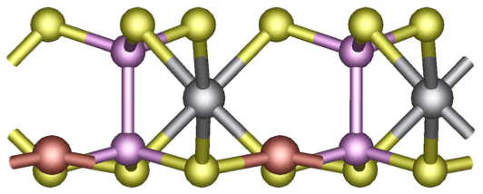
image.3.1[83*33]
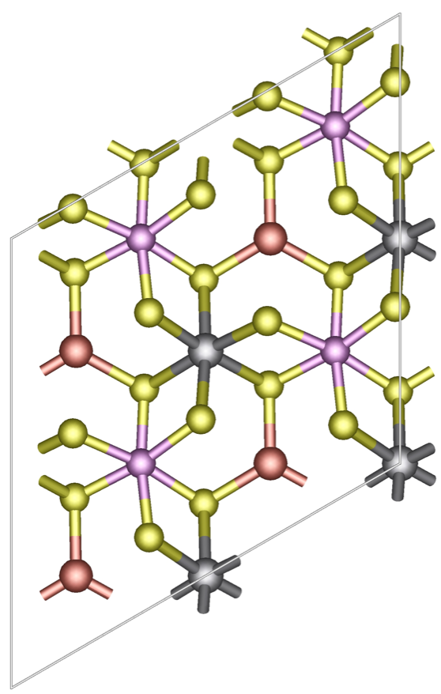
image.3.2[87*137]
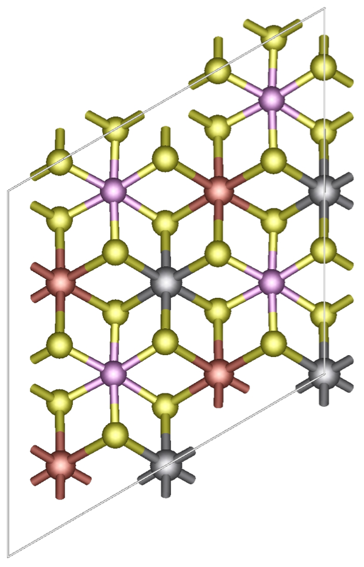
image.3.3[93*145]
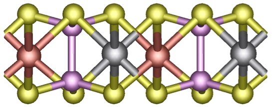
image.3.4[85*33]
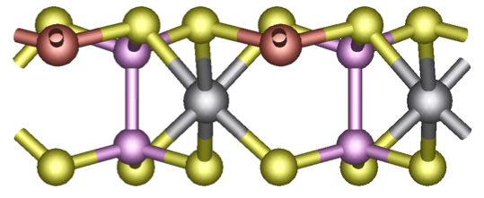
image.3.5[84*34]
TMPCs - CuMP
X
(M=Cr, V; X=S, Se) are van der Waals layered compounds. They were
synthesized more than three decades ago.
16, 36-40
Monolayer TMPC consists of a chalcogenide
(S/Se) framework with the octahedral sites filled by Cu, Cr/V and P–P in a triangular pattern, as
illustrated in Fig. 1. Paraelectric (PE) and FE phases are shown in Figs. 1(a) and 1(b), respectively.
In the PE phase, Cu and Cr/V atoms are all located in the middle plane. In the FE phase, Cu atoms
are displaced along the plane normal, accompanied with spontaneous out-of-plane polarization.
The FE polarization in these materials is similar to the recently discovered ferroelectric layered
compound CuInP
S
,
however the latter does not possess magnetism.
Variations of total energy with respect to different lattice constant are presented in Fig. S1 for
four monolayer TMPCs - CuMP
X
(M=Cr, V; X=S, Se). It can be seen that two stable/metastable
phases of PE and FE exist. To quantify the out-of-plane ferroelectricity we calculate the electric
dipole moment along the plane normal. It is 0.79, 0.67, 0.78 and 0.65
p
C/m for monolayer
CuCrP
S
, CuCrP
Se
, CuVP
S
, and CuVP
Se
, respectively. In addition, it should be noted that
the Hubbard U parameter (U
eff
) used in the calculations does have some influence on the relative
energy difference of the FE and PE phases. However two FE and PE phases always exist for a
wide range of U
eff
from 0 to 3 eV, and the FE phase of monolayer CuCrP
S
is always more stable
than the PE phase (see Fig. S1 in SM).
. (a-d) Minimum energy pathway of FE-PE-FE transition in monolayer TMPCs - CuMP
X
. Energy
value here is for a single formula unit. (e-h) Evolution of total electric polarization along the FE-PE-FE
transition pathway.
To understand the transition between the FE and PE phase, we further investigate the
minimum energy pathway and the corresponding polarization from FE to PE phase. This is
achieved by using the climbing image nudged elastic band (CI-NEB) method
with total energy
and interatomic forces calculated by DFT. The corresponding results for four TMPC monolayers
are shown in Fig. 2. We can see that the minimum energy barriers from the FE to PE state are
about 100, 27, 100, and 41 meV/formula unit (f.u.) for CuCrP
S
, CuCrP
Se
, CuVP
S
, and
(b)
CuCrP
Se
(f)
CuVP
S
(c)
(g)
CuVP
Se
(d)
(h)
CuCrP
S
(a)
FE
FE
PE
(e)
FIG. 2
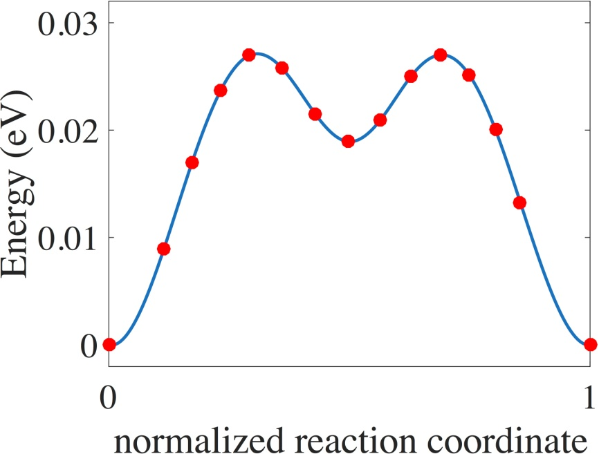
image.4.1[108*82]
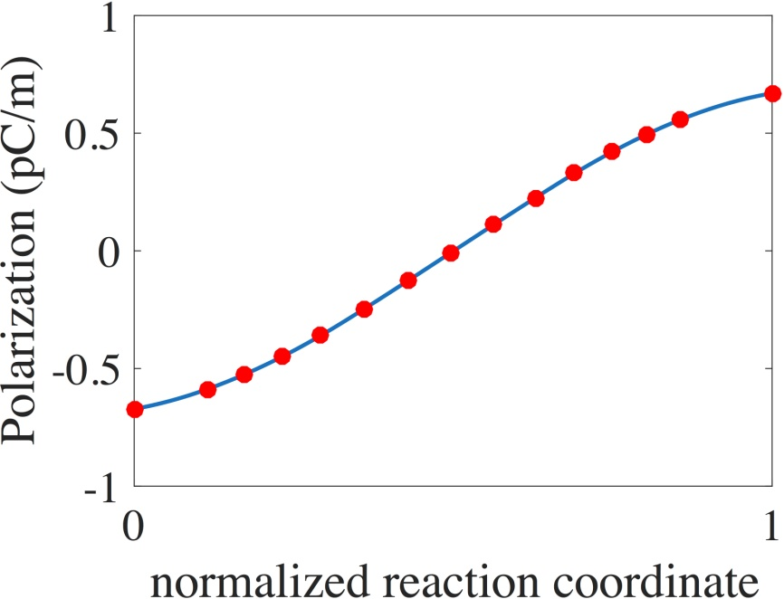
image.4.2[106*81]
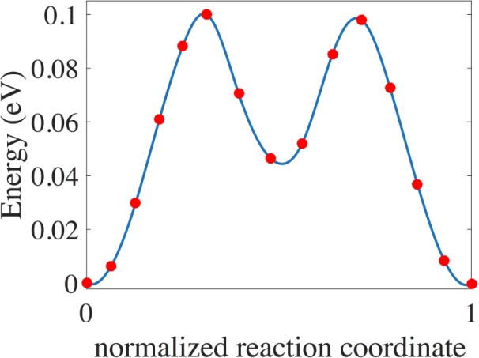
image.4.3[108*80]
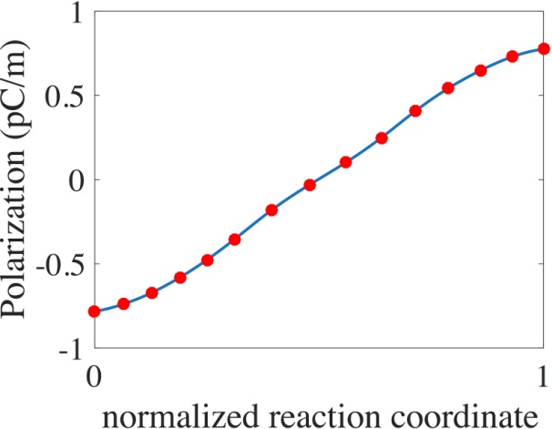
image.4.4[104*81]
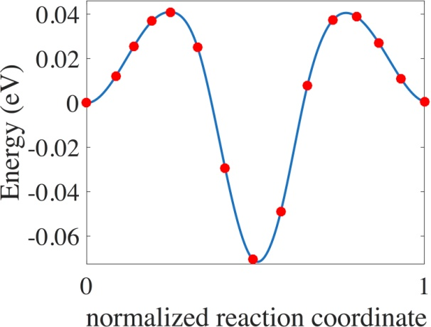
image.4.5[108*82]
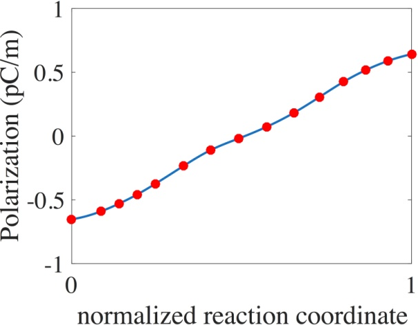
image.4.6[105*81]
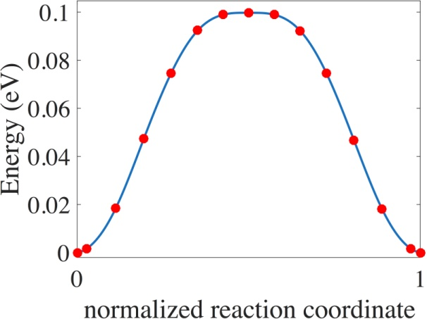
image.4.7[108*80]
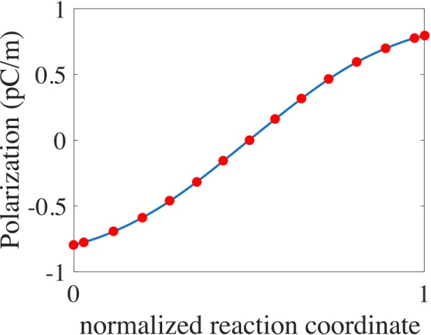
image.4.8[108*84]
CuVP
Se
, respectively. These potential barriers are reasonably large (
e.g.
100 meV for CuCrP
S
and CuVP
S
) and make the metastable states dynamically stable. For comparison, the barrier
height for conventional FE material PbTiO
is about 75 meV.
So it is possible to separate the FE
and PE phase in experiment. In addition, an appropriate intermediate barrier is necessary for facile
switching of ferroelectricity. Therefore, these small transition barriers are suitable for 2D
ferroelectric nanoscale switch and memory applications. It is important to notice that both FE and
PE phases of CuCrP
Se
, CuVP
S
and CuVP
Se
are either globally stable or metastable with two
saddle points, as evidenced in Fig. 2. Although first-principles calculations here provided potential
energy barrier, phase transition temperature is a more complicated physical quantity, not only
related to kinetic barrier but also depending on appropriate theoretical model. For example,
Barraza-Lopez et al.
recently found that first-principles molecular dynamics simulations show
qualitative agreement with four-state 2D clock model for group IV monochalcogenide monolayers,
indicating an order-disorder phase transition that may not be described by Landau theory in two
dimension. Therefore, specific phase transition temperature in the four TMPCs here requires a
separate investigation of the interplay among the dimensionality, symmetry, boundary conditions,
and specific structures, which is beyond the present scope.
We further studied AFE states in a 2
×
1 supercell by moving one Cu atom up and the other
down away from the center atomic plane. Figure S2 in supplementary material shows the
calculated migration energy barrier from a FE to AFE state using the CI-NEB method. AFE states
are found to be more stable than FE and PE states for four compounds. However, the minimum
energy barriers from FE to AFE state are 34 meV/f.u. and 40 meV/f.u. for CuCrP
S
and CuVP
S
,
respectively. These kinetic barriers are large enough to prevent spontaneous transition from FE to
AFE state at room temperature. For CuCrP
Se
and CuVP
Se
, the minimum energy barriers from
FE to AFE state are 3.5 meV/f.u. and 11 meV/f.u., respectively, indicating that AFE state can be
observed in experiment. Therefore, CuCrP
S
and CuVP
S
are more promising for practical
ferroelectric applications.
Figure 3(a) shows spin density of FM state in monolayer CuCrP
S
. It demonstrates that the
magnetic moment is mainly located at Cr/V atoms. Each Cr (V) atom has about 3.0
µμ
?
(2.0
µμ
?
)
moment. Magnetic orders in their monolayers were studied by using a 2
×
2 supercell. NM, FM and
several AFM states were considered in total energy calculations. The FM state was found to be
always the most stable one, regardless of FE or PE phase. The FM ordering originates from the
indirect exchange interaction between Cr/V atoms mediated by Cu and S/Se. Energy difference
between FM and AFM is about 14 meV per Cr atom for both CuCrP
S
and CuCrP
Se
, and is
about 1.5meV per V atom for both CuVP
S
and CuVP
Se
6.
The energy of NM is much higher
than those of FM and AFM by about 3.2 eV/f.u. for CuCrP
S
and CuCrP
Se
and about 1.7 eV/f.u.
for CuVP
S
and CuVP
Se
. According to
the Mermin-Wagner theorem,
FM order is prohibited
within 2D isotropic Heisenberg model with continuous SU(2) or SO(3) symmetry. However, finite
magnetic anisotropy will help stabilize long-range magnetic order. To determine the MAE, we
calculate the total energy as a function of magnetization direction.
Figure 3(b)
presents the angular
dependence of the MAE in monolayer
CuCrP
S
, while the result for CuCrP
Se
is shown in Fig.
S3
. These data demonstrate that both monolayer
CuCrP
Se
and CuCrP
S
possess high magnetic
anisotropy. The energy difference between in-plane and out-of-plane magnetization,
Δ𝐸≡𝐸
?/?
−
𝐸
?
, is -28
µ
eV and +242
µ
eV for
CuCrP
S
and
CuCrP
Se
, respectively. This indicates that the
easy axis of monolayer
CuCrP
Se
is on the 2D plane
, while the easy axis of
monolayer
CuCrP
S
is
along the plane normal. These MAE values are much higher than those of nickel, iron, and
cobalt, three well-known room-temperature magnetic element crystals with the MAE on the order
of 1
µ
eV.
Our results therefore confirm that the FM and FE phases can coexist in these single-
phase 2D materials. Very recently, 2D magnetic semiconductors, CrGeTe
and CrI
have been
shown to maintain their ferromagnetism at single atomic-layer level, although ferroelectricity is
absent in these 2D semiconductors.
. Electronic structure of monolayer CuCrP
S
. (a) Spin density plot of the FE phase. (b) Magnetic
anisotropy of monolayer CuCrP
S
as function of the magnetization direction. (c-d) Electronic band
structure of FE and PE phase, respectively.
The FE-PE phase transition of these monolayer compounds discussed above will have more
profound impact if there exists direct coupling between the FE/PE phase and their
electronic/optical properties. Figure 3(c) and 3(d) show the band structures of the PE and FE phase
for monolayer CuCrP
S
, respectively, where the red and blue colors indicate spin-majority and
S
Cu
Cr
P
(d)
(c)%%
ParaelectricFerroelectric
µ
eV
E
g
=1.04eV
E
g
=1.44eV
(a)
(b)
spin-minority electron, respectively. Electronic band structure for CuCrP
Se
6,
CuVP
S
, and
CuVP
Se
can be found in Fig. S4. The results demonstrate that all four monolayer materials are
intrinsic 2D semiconducting materials with indirect band gap ranging from 0.9 eV to 1.4 eV.
Although the band structure profiles are similar, the band gaps of the FE and PE phases are clearly
different. The calculated band gaps of PE (FE) phase are about 1.0 (1.4), 0.9 (1.25), 1.0 (1.3), and
0.9(1.0) eV for CuCrP
S
, CuCrP
Se
, CuVP
S
, and CuVP
Se
, respectively. The intrinsic
coupling between FE/PE phase and the electronic band gap implies that these materials may be
used for ferroelectric switching and memory device applications.
The above findings point to the possibility of several compelling device concepts. First, by
applying external vertical electric field one can control the FE-PE phase transition. Then taking
advantage of different band gap in the FE and PE phases the FE/PE states can be detected by
measuring electric current under a small bias, thereby realizing 2D ferroelectric memory as shown
in Fig. 4(a). Second, we can also control the two FE states with opposite polarization direction by
reversing external vertical electric field. The corresponding states can be detected or “read” by
measuring the surface photocurrent or surface photovoltage under photo-illumination. This is
because the opposite internal electric field from the opposite FE polarization will drive
photoexcited charge carriers (
i.e.
electron and hole) to drift in opposite direction, as presented in
photovoltaics, as their band gap (0.9 - 1.4 eV) falls within the visible range and the internal electric
field in ferroelectric monolayers may enhance the separation of photo-excited charge carriers.
. 2D TMPCs - CuMP
X
(M=Cr, V; X=S, Se) based ferroelectric and optoelectronic device concepts.
(a) Energy landscape of FE-PE-FE transition in 2D TMPCs. (b) Schematic of 2D ferroelectric memory. (c)
Schematic of 2D ferroelectric optoelectronic device.
In summary, in this Letter we predict that monolayer TMPCs - CuMP
X
(M=Cr, V; X=S,
Se)
represent a class of 2D multiferroic materials with the coexistence of FE and FM orders.
Spontaneous polarization of the FE phase originates from the low energy configuration where Cu
atoms are displaced away from the center plane, forming an out-of-plane ferroelectricity. Although
E
E
e
h
h
!
(b)
(a)%%
(c)
FE
FE
PE
Fig. 4(b). In addition, these monolayer materials may be useful for realizing 2D ferroelectric
FIG. 4
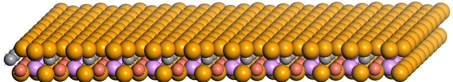
image.7.1[154*27]
 image.7.2[150*27]
image.7.3[10*10]
image.7.4[10*10]
image.7.5[10*10]
image.7.6[10*10]
image.7.7[10*10]
image.7.8[10*10]
image.7.9[10*10]
image.7.10[10*10]
image.7.11[10*10]
image.7.12[10*10]
image.7.13[10*10]
image.7.14[10*10]
image.7.15[10*10]
image.7.16[10*10]
image.7.17[10*10]
image.7.18[10*10]
image.7.19[10*10]
image.7.20[10*10]
image.7.21[10*10]
image.7.22[10*10]
image.7.23[10*10]
image.7.24[10*10]
image.7.25[10*10]
image.7.26[10*10]
image.7.27[10*10]
image.7.28[10*10]
image.7.29[10*10]
image.7.30[10*10]
image.7.31[10*10]
image.7.32[10*10]
image.7.33[10*10]
image.7.34[10*10]
image.7.35[10*10]
image.7.36[10*10]
image.7.37[10*10]
image.7.38[10*10]
image.7.39[10*10]
image.7.40[10*10]
image.7.41[10*10]
image.7.42[10*10]
image.7.43[10*10]
image.7.44[10*10]
image.7.2[150*27]
image.7.3[10*10]
image.7.4[10*10]
image.7.5[10*10]
image.7.6[10*10]
image.7.7[10*10]
image.7.8[10*10]
image.7.9[10*10]
image.7.10[10*10]
image.7.11[10*10]
image.7.12[10*10]
image.7.13[10*10]
image.7.14[10*10]
image.7.15[10*10]
image.7.16[10*10]
image.7.17[10*10]
image.7.18[10*10]
image.7.19[10*10]
image.7.20[10*10]
image.7.21[10*10]
image.7.22[10*10]
image.7.23[10*10]
image.7.24[10*10]
image.7.25[10*10]
image.7.26[10*10]
image.7.27[10*10]
image.7.28[10*10]
image.7.29[10*10]
image.7.30[10*10]
image.7.31[10*10]
image.7.32[10*10]
image.7.33[10*10]
image.7.34[10*10]
image.7.35[10*10]
image.7.36[10*10]
image.7.37[10*10]
image.7.38[10*10]
image.7.39[10*10]
image.7.40[10*10]
image.7.41[10*10]
image.7.42[10*10]
image.7.43[10*10]
image.7.44[10*10]
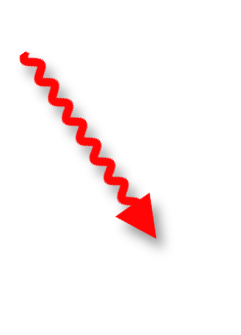
image.7.45[43*60]
 image.7.46[43*60]
image.7.46[43*60]
 image.7.47[194*128]
image.7.47[194*128]
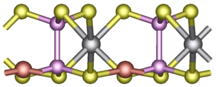
image.7.48[64*26]
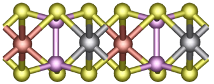
image.7.49[63*24]
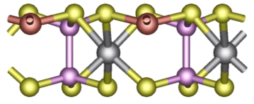
image.7.50[65*26]
AFE states are energetically more stable than FE and PE states, the energy barrier in monolayer
CuCrP
S
and CuVP
S
is large enough to prevent spontaneous transition from FE to AFE state at
room temperature. This indicates that the FE state can be observed in experiment. Furthermore,
the FM order comes from indirect exchange interaction between Cr/V atoms which is more stable
than AFM order. The large magnetic anisotropy
suggests the possibility of long-range FM order
in monolayer TMPCs.
Our results also show that these compounds are all semiconducting with
the band gap ranging from 0.9 eV to 1.4 eV, making them suitable for 2D ferroelectric photovoltaic
applications. Finally, the FE and PE states may be further controlled by external vertical electric
field, which may open avenues for 2D multiferroics-based nanoscale memories and switches.
Supplementary Material:
details on the total energy of FE and PE phases of monolayer
TMPCs as function of lattice constant, minimum energy pathway for FE-AFE transition, MAE as
function of magnetization direction, and electronic band structure of four TMPCs.
J.Q. acknowledges the financial support from the National Natural Science Foundation of
China (Projects No. 11674132) and PAPD. H.W. and X.Q. acknowledge the start-up funds from
Texas A&M University and the support from Texas A&M Energy Institute. Portions of this
research were conducted with the advanced computing resources provided by Texas A&M High
Performance Research Computing.
1 J. Åkerman, Science
, 508-510 (2005).
2 M. Dawber, K. M. Rabe and J. F. Scott, Rev. Mod. Phys.
, 1083-1130 (2005).
3 L. W. Martin and A. M. Rappe, Nat. Rev. Mater.
, 16087 (2016).
4 R. Ramesh and N. A. Spaldin, Nat. Mater.
, 21-29 (2007).
5 W. Eerenstein, N. D. Mathur and J. F. Scott, Nature
, 759-765 (2006).
6 D. D. Fong, G. B. Stephenson, S. K. Streiffer, J. A. Eastman, O. Auciello, P. H. Fuoss and C. Thompson,
Science
, 1650-1653 (2004).
7 J. Junquera and P. Ghosez, Nature
, 506-509 (2003).
8 C. Gong, L. Li, Z. Li, H. Ji, A. Stern, Y. Xia, T. Cao, W. Bao, C. Wang, Y. Wang, Z. Q. Qiu, R. J. Cava, S.
G. Louie, J. Xia and X. Zhang, Nature
, 265-269 (2017).
9 B. Huang, G. Clark, E. Navarro-Moratalla, D. R. Klein, R. Cheng, K. L. Seyler, D. Zhong, E. Schmidgall,
M. A. McGuire, D. H. Cobden, W. Yao, D. Xiao, P. Jarillo-Herrero and X. Xu, Nature
, 270-273 (2017).
10 K. Chang, J. Liu, H. Lin, N. Wang, K. Zhao, A. Zhang, F. Jin, Y. Zhong, X. Hu, W. Duan, Q. Zhang, L. Fu,
Q.-K. Xue, X. Chen and S.-H. Ji, Science
, 274-278 (2016).
11 M. Mehboudi, B. M. Fregoso, Y. Yang, W. Zhu, A. van der Zande, J. Ferrer, L. Bellaiche, P. Kumar and S.
Barraza-Lopez, Phys. Rev. Lett.
, 246802 (2016).
12 R. Fei, W. Kang and L. Yang, Phys. Rev. Lett.
, 097601 (2016).
13 S. N. Shirodkar and U. V. Waghmare, Phys. Rev. Lett.
, 157601 (2014).
14 M. Wu, S. Dong, K. Yao, J. Liu and X. C. Zeng, Nano Lett.
, 7309-7315 (2016).
15 E. Bruyer, D. Di Sante, P. Barone, A. Stroppa, M.-H. Whangbo and S. Picozzi, Phys. Rev. B
, 195402
(2016).
16 F. Liu, L. You, K. L. Seyler, X. Li, P. Yu, J. Lin, X. Wang, J. Zhou, H. Wang, H. He, S. T. Pantelides, W.
Zhou, P. Sharma, X. Xu, P. M. Ajayan, J. Wang and Z. Liu, Nat. Commun.
, 12357 (2016).
17 W. Wan, C. Liu, W. Xiao and Y. Yao, Appl. Phys. Lett.
, 132904 (2017).
References
18 W. Ding, J. Zhu, Z. Wang, Y. Gao, D. Xiao, Y. Gu, Z. Zhang and W. Zhu, Nat. Commun.
, 14956 (2017).
19 S. Barraza-Lopez, T. P. Kaloni, S. P. Poudel and P. Kumar, Phys. Rev. B
, 024110 (2018).
20 W. Li and J. Li, Nat. Commun.
, 10843 (2016).
21 M. Mehboudi, A. M. Dorio, W. Zhu, A. van der Zande, H. O. Churchill, A. A. Pacheco-Sanjuan, E. O.
Harriss, P. Kumar and S. Barraza-Lopez, Nano Lett.
, 1704-1712 (2016).
22 L. Seixas, A. S. Rodin, A. Carvalho and A. H. Castro Neto, Phys. Rev. Lett.
, 206803 (2016).
23 M. Wu and X. C. Zeng, Nano Lett.
, 3236-3241 (2016).
24 H. Wang and X. Qian, 2D Mater.
, 015042 (2017).
25 H. Wang and X. Qian, Nano Lett.
, 5027-5034 (2017).
26 P. Suman Raj and M. F. Benjamin, J. Phys.: Condens. Matter
, 43LT01 (2017).
27 R. Haleoot, C. Paillard, T. P. Kaloni, M. Mehboudi, B. Xu, L. Bellaiche and S. Barraza-Lopez, Phys. Rev.
Lett.
, 227401 (2017).
28 P. Hohenberg and W. Kohn, Phys. Rev.
, B864-B871 (1964).
29 W. Kohn and L. J. Sham, Phys. Rev.
, A1133-A1138 (1965).
30 G. Kresse and J. Furthmüller, Phys. Rev. B
, 11169-11186 (1996).
31 J. P. Perdew, K. Burke and M. Ernzerhof, Phys. Rev. Lett.
, 3865-3868 (1996).
32 P. E. Blöchl, Phys. Rev. B
, 17953-17979 (1994).
33 H. J. Monkhorst and J. D. Pack, Phys. Rev. B
, 5188-5192 (1976).
34 S. Grimme, J. Comput. Chem.
, 1787-1799 (2006).
35 S. L. Dudarev, G. A. Botton, S. Y. Savrasov, C. J. Humphreys and A. P. Sutton, Phys. Rev. B
, 1505 (1998).
36 X. Bourdon, V. Maisonneuve, V. B. Cajipe, C. Payen and J. E. Fischer, J. Alloys Compd.
, 122-127
(1999).
37 R. Brec, Solid State Ion.
, 3-30 (1986).
38 V. Maisonneuve, M. Evain, C. Payen, V. B. Cajipe and P. Molinié, J. Alloys Compd.
, 157-164 (1995).
39 M. A. Susner, M. Chyasnavichyus, M. A. McGuire, P. Ganesh and P. Maksymovych, Adv. Mater.
,
1602852 (2017).
40 A. Belianinov, Q. He, A. Dziaugys, P. Maksymovych, E. Eliseev, A. Borisevich, A. Morozovska, J. Banys,
Y. Vysochanskii and S. V. Kalinin, Nano Lett.
, 3808-3814 (2015).
41 G. Henkelman, B. P. Uberuaga and H. Jónsson, J. Chem. Phys.
, 9901-9904 (2000).
42 S. P. Beckman, X. Wang, K. M. Rabe and D. Vanderbilt, Phys. Rev. B
, 144124 (2009).
43 N. D. Mermin and H. Wagner, Phys. Rev. Lett.
, 1133-1136 (1966).
44 S. V. Halilov, A. Y. Perlov, P. M. Oppeneer, A. N. Yaresko and V. N. Antonov, Phys. Rev. B
, 9557-9560
(1998).
 image.6.1[132*118]
image.6.2[132*118]
image.6.1[132*118]
image.6.2[132*118]
 image.6.3[132*118]
image.6.4[132*118]
image.6.3[132*118]
image.6.4[132*118]
 image.6.5[132*118]
image.6.5[132*118]
 image.6.6[132*118]
image.6.6[132*118]
 image.6.7[132*118]
image.6.8[132*118]
image.6.7[132*118]
image.6.8[132*118]
 image.6.9[132*118]
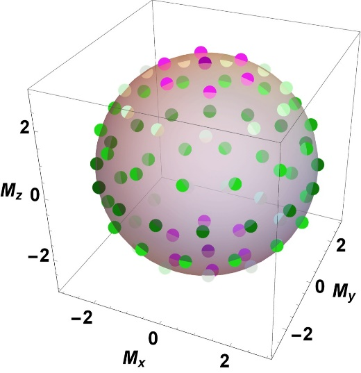
image.6.10[96*99]
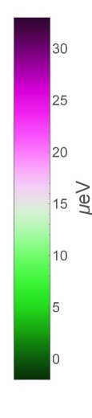
image.6.11[19*90]
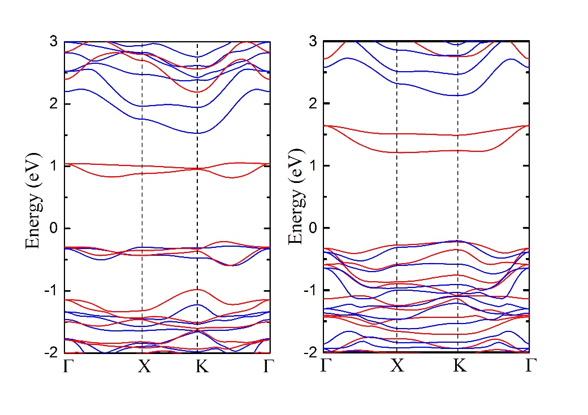
image.6.12[266*188]
image.6.9[132*118]
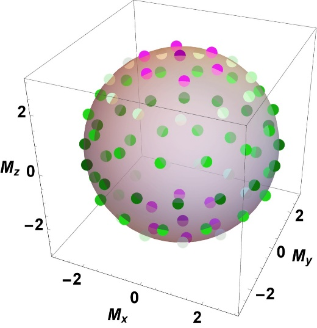
image.6.10[96*99]
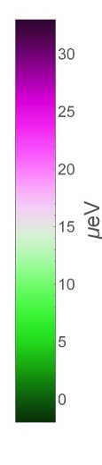
image.6.11[19*90]
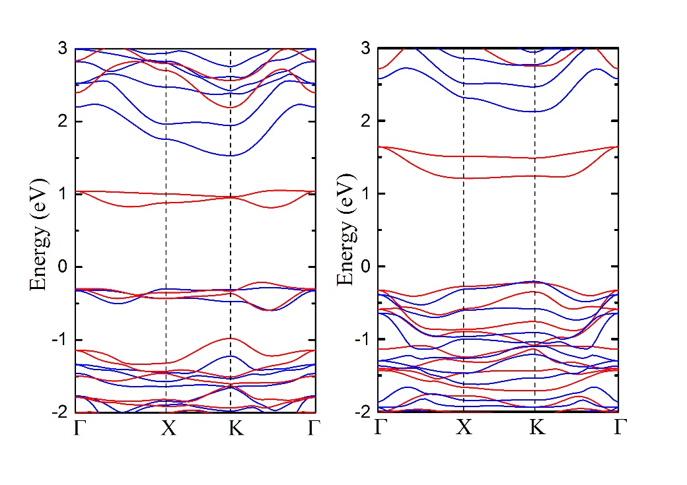
image.6.12[266*188]
 image.6.13[266*188]
image.6.13[266*188]